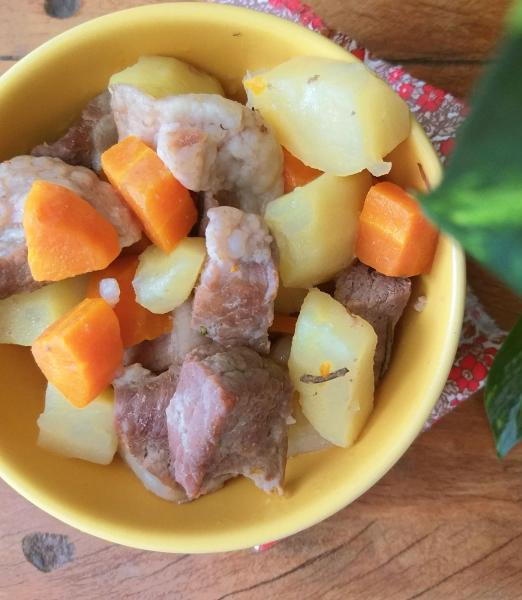

Livro de Receitas
Receita de Carne de panela sem panela de pressão

Quer fazer carne de panela, mas não tem panela de pressão ou tem receio de usar? Então esta receita de carne de panela sem panela de pressão é para si!
Aqui mostramos como cozinhar carne em panela normal ou comum com passo a passo. O preparo é um pouco mais demorado que na panela de pressão, mas o resultado obtido é o mesmo. O segredo é escolher uma carne macia e cortar em pedaços não muito grandes, desse jeito o resultado será uma carne de panela molinha sem erro!
Veja abaixo a lista de ingredientes e o modo de preparo e faça você também essa delícia de carne de panela sem panela de pressão, ótima para o dia a dia e que com certeza agradará a toda a sua família.
Ingredientes para fazer Carne de panela sem panela de pressão:
- 500 gramas de coxão mole em cubos médios
- 3 colheres de sopa de óleo ou azeite
- 2 batatas picadas
- 2 cenouras picadas
- 4 xícaras de água quente
- 1 pitada de sal
- 1 cebola picada
- 2 dentes de alho
Como fazer Carne de panela sem panela de pressão:
- Leve uma panela comum ao fogo médio e acrescente o óleo. Quando o óleo esquentar, adicione a carne picada em cubos médios e frite até a carne dourar de todos os lados - a esse processo se chama 'selar a carne' e garante uma maior suculência e sabor!
- Em seguida acrescente a cebola, o alho, o alecrim e a água. Tampe a panela e cozinhe por 30 minutos ou até a carne ficar macia.
Dica: pique a carne com um garfo ou com uma faca para comprovar a maciez.
- Ao fim desse tempo adicione as batatas, a cenoura e o sal. Misture bem e deixe cozinhar até que os legumes fiquem macios também.
- Está pronta sua carne de panela de panela sem panela de pressão!
Veja mais receitas e dicas abaixo:
Escreva seu comentário